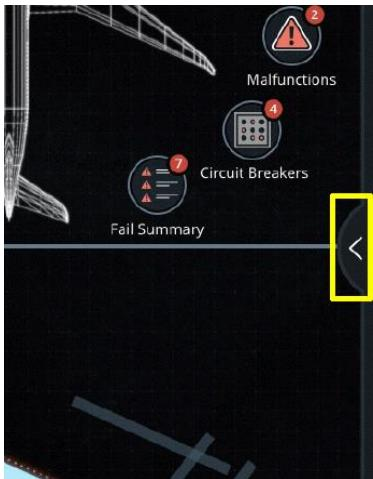
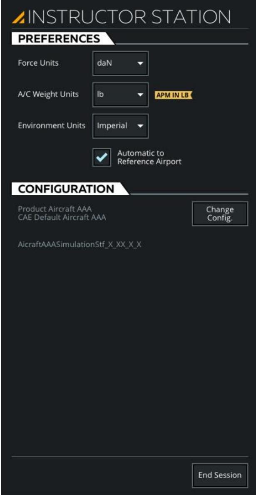
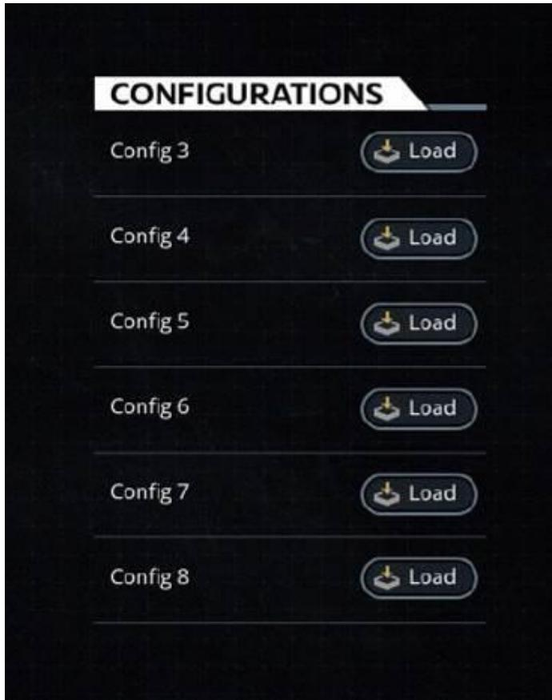
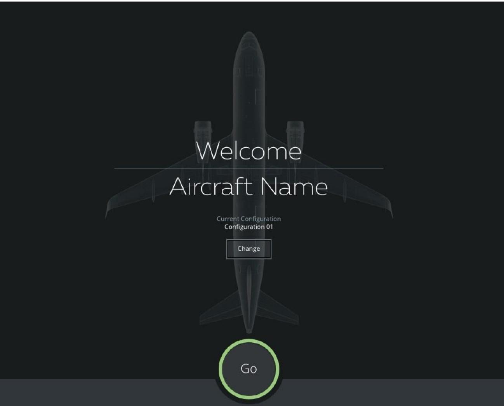

1.2.6 教员台滑动面板（INSTRUCTOR STATION Sliding Panel）
对应原始手册：## 10. INSTRUCTOR STATION Sliding Panel
设计意图与定位：INSTRUCTOR STATION Sliding Panel 并非 Control Board 内部的功能性子面板（如 Malfunctions、Weight & CG 等），而是一个系统级的全局设置入口。它解决的核心问题是： 单位制（UOM）、系统配置切换和结束会话这三个操作不属于任何功能 Tab（它们既不是"飞机参数"，也不是"环境参数"），但又必须随时可达。
- 为什么不放在某个 Tab 里？——单位制设置影响整个系统的显示方式，如果放在 AIRCRAFT Tab 中，教员会误以为"这只是改飞机重量的显示单位"；放在 REFERENCE AIRPORT Tab 中，又会误以为"这只是改机场气象的显示单位"。独立的 INSTRUCTOR STATION 面板在 UI 上划清了边界："这里放的是关于'系统怎么看'的设置，不是关于'飞机是什么状态'的参数。"
- 为什么用 Sliding Panel 而不是常驻控件？——这些设置通常 session 开始前配置一次，训练中很少修改。放在右侧边缘的 Expand Button 中，平时不占用屏幕空间，需要时一步展开。
- 为什么结束会话也放在这里？——End Session 是一个破坏性全局操作（会结束当前训练 session）。它不能放在任何功能 Tab 中（避免误触），也不能放在 Footer（Footer 是高频操作区）。放在 Sliding Panel 底部是一个需要两步才能触及的位置（先展开面板 → 再点击按钮），符合安全设计原则。
一、功能层级与界面总览
1.1 功能层级结构
graph TD
subgraph CB["Control Board / 控制面板"]
E[Expand Button
展开按钮] end subgraph Panel["INSTRUCTOR STATION Sliding Panel / 教员台滑动面板"] A[PREFERENCES Tab
偏好设置选项卡] B[CONFIGURATION Tab
配置选项卡] C[End Session Button
结束会话按钮] end A --> A1[Force Units
力单位] A --> A2[A/C Weight Units
飞机重量单位] A --> A3[Environment Units
环境单位] A --> A4[Automatic to Reference Airport
自动匹配参考机场] A3 --> A3a[Metric
公制] A3 --> A3b[Imperial
英制] B --> B1[Change Configuration Button
更改配置按钮] subgraph Popups["点击后弹出 / Pop-up Panels"] D[CONFIGURATIONS Page
配置选择页面] end E -.->|点击弹出| Panel B1 -.->|点击弹出| D style CB fill:#f1f5f9,stroke:#64748b,stroke-width:2px style Panel fill:#dbeafe,stroke:#2563eb,stroke-width:2px style Popups fill:#fef3c7,stroke:#d97706,stroke-dasharray: 5 5
展开按钮] end subgraph Panel["INSTRUCTOR STATION Sliding Panel / 教员台滑动面板"] A[PREFERENCES Tab
偏好设置选项卡] B[CONFIGURATION Tab
配置选项卡] C[End Session Button
结束会话按钮] end A --> A1[Force Units
力单位] A --> A2[A/C Weight Units
飞机重量单位] A --> A3[Environment Units
环境单位] A --> A4[Automatic to Reference Airport
自动匹配参考机场] A3 --> A3a[Metric
公制] A3 --> A3b[Imperial
英制] B --> B1[Change Configuration Button
更改配置按钮] subgraph Popups["点击后弹出 / Pop-up Panels"] D[CONFIGURATIONS Page
配置选择页面] end E -.->|点击弹出| Panel B1 -.->|点击弹出| D style CB fill:#f1f5f9,stroke:#64748b,stroke-width:2px style Panel fill:#dbeafe,stroke:#2563eb,stroke-width:2px style Popups fill:#fef3c7,stroke:#d97706,stroke-dasharray: 5 5
1.2 界面结构
| 区域/控件 | 位置 | 功能说明 | 对应章节 |
|---|---|---|---|
| Expand Button 展开按钮 | 控制面板右侧边缘（垂直长条形按钮，含右向箭头图标） | 点击展开/收起教员台滑动面板 | — |
| PREFERENCES Tab 偏好设置选项卡 | 滑动面板顶部选项卡栏（最左侧） | 设置力单位、飞机重量单位、环境单位及自动匹配参考机场 | 详见当前页面 2.1 小节（PREFERENCES Tab） |
| CONFIGURATION Tab 配置选项卡 | 滑动面板顶部选项卡栏（中间） | 查看当前 IOS 配置参数并切换至其他配置 | 详见当前页面 2.2 小节（CONFIGURATION Tab） |
| End Session Button 结束会话按钮 | 滑动面板底部区域（蓝色/高亮按钮） | 结束当前会话并返回 IOS 主页；在主页可通过 Change 按钮选择其他配置 | 详见当前页面 2.3 小节（End Session） |

图 1：控制面板总览，红色指示框标注 INSTRUCTOR STATION 展开按钮位置

图 2：展开按钮特写（位于控制面板右侧边缘）

图 3：教员台滑动面板总览（点击展开按钮后弹出）
二、核心功能详解
2.1 PREFERENCES Tab（偏好设置选项卡）
触发方式：点击控制面板右侧的展开按钮（Expand Button）展开教员台滑动面板，默认进入 PREFERENCES 选项卡。该选项卡包含多个下拉按钮，允许教员设置力单位、飞机重量单位、环境单位。所有设置均为即时生效，无需额外确认。
2.1.1 面板属性
| 属性 | 说明 |
|---|---|
| 功能定义 | 设置各参数的计量单位制（UOM） |
| 呈现方式 | 滑动面板顶部选项卡，内含 3 个下拉按钮和 1 个复选框 |
| 交互方式 | 点击下拉按钮展开选项 → 点击目标选项即时切换 |
| 互斥关系 | Metric（公制）与 Imperial（英制）两个选项互斥，下拉按钮只能激活其一 |
| 边界行为 | 下拉选择后立即生效，无需额外确认；切换环境单位时所有相关参数显示同步更新 |
| 与其他功能关系 | 环境单位与参考机场选项卡（1.2.5）的环境参数显示单位联动；自动匹配参考机场与 Airport 字段关联 |
2.1.2 参数设置项
| 参数项 | 可选值 | 原文说明 / 生效效果 |
|---|---|---|
| 力单位 Force Units | Lbf / daN | Lbf：将力单位设置为磅力（lbf）；daN：将力单位设置为十牛顿（daN） |
| 飞机重量单位 A/C Weight Units | Kg / lb | Kg：将飞机重量单位设置为千克（kg），液体体积使用升（liters）；lb：将飞机重量单位设置为磅（lb），液体体积使用加仑、夸脱和品脱（gal, qt, pt） |
| 环境单位 Environment Units | Metric / Imperial | Metric：QFE-hPa/mb、QNH-hPa/mb、温度-°C、RVR-m、能见度-km、风-kt、跑道污染深度-mm、云高-ft；Imperial：QFE-inHg、QNH-inHg、温度-°C、RVR-ft、能见度-sm、风-kt、跑道污染深度-in、云高-ft |
| 自动匹配参考机场 Automatic to Reference Airport | 复选框 | 勾选后将单位制参数自动设置为与所选参考机场匹配 |
2.2 CONFIGURATION Tab（配置选项卡）
触发方式：点击教员台滑动面板顶部的 CONFIGURATION 选项卡进入。该选项卡允许教员查看当前 IOS 配置的参数，并将当前 IOS 更改为其他配置。
| 属性 | 说明 |
|---|---|
| 功能定义 | 查看当前 IOS 配置并切换至其他配置 |
| 呈现方式 | 滑动面板顶部选项卡，显示当前配置信息 |
| 交互方式 | 点击"更改配置"按钮 → 弹出配置选择页面 → 点击目标配置的"加载"按钮 |
| 边界行为 | 加载新配置后 IOS 将重新初始化至所选配置状态；当前训练数据可能丢失 |
| 与其他功能关系 | 与 End Session 中的"选择其他配置"功能共用配置列表；与课程计划状态存在互斥（切换配置将中断当前课程） |

图 4：IOS 配置选择页面
2.3 End Session（结束会话）
触发方式：点击教员台滑动面板底部的 End Session 按钮。点击后结束当前 IOS 会话并返回 IOS 主页；在 IOS 主页点击 Change 按钮可选择并加载其他配置。
| 属性 | 说明 |
|---|---|
| 功能定义 | 结束当前 IOS 训练会话 |
| 呈现方式 | 滑动面板底部区域的高亮按钮 |
| 交互方式 | 点击按钮 → 结束当前会话 → 返回 IOS 主页；若需切换配置，在 IOS 主页点击 Change 按钮进入配置选择页面 |
| 边界行为 | 结束会话后将清空当前训练状态；若有未保存数据可能丢失；若当前有活跃课程将同时结束课程 |
| 与其他功能关系 | 与 CONFIGURATION Tab 共用配置切换能力；与课程计划选项卡（1.2.1）的 End Lesson 功能语义相近但作用域不同（End Session 为整个 IOS，End Lesson 为当前课程） |

图 5：IOS 主页
三、全局操作流程与推导
3.1 INSTRUCTOR STATION 教员核心操作流程全景图
flowchart LR
Start([进入 INSTRUCTOR STATION
Sliding Panel]) --> OP_TYPE{选择操作类型} OP_TYPE -->|设置单位制| UOM_ENTRY[点击 PREFERENCES
偏好设置选项卡] OP_TYPE -->|切换配置| CONFIG_ENTRY[点击 CONFIGURATION
配置选项卡] OP_TYPE -->|结束会话| END_ENTRY[点击 End Session
结束会话按钮] subgraph UOM_FLOW["单位设置流程 — 2.1"] UOM_ENTRY --> UOM1[选择力单位
Lbf / daN] UOM1 --> UOM2[选择飞机重量单位
Kg / lb] UOM2 --> UOM3[选择环境单位
Metric / Imperial] UOM3 --> UOM4[勾选/取消
自动匹配参考机场] UOM4 --> UOM5[设置即时生效] end subgraph CONFIG_FLOW["配置切换流程 — 2.2"] CONFIG_ENTRY --> C1[点击更改配置按钮] C1 --> C2[浏览配置列表] C2 --> C3{选择目标配置} C3 -->|点击加载| C4[配置加载中] C4 -->|加载成功| C5[IOS 切换至新配置] C4 -->|加载失败| C_ERR[提示错误
保留原配置] C_ERR --> C2 C3 -->|取消| PANEL_OPEN[返回面板] end subgraph END_FLOW["结束会话流程 — 2.3"] END_ENTRY --> E1{确认结束会话?} E1 -->|确认| E2[结束当前会话] E2 --> E3[返回 IOS 主页] E3 --> E4{是否切换配置?} E4 -->|是| E5[点击 Change 按钮
选择其他配置] E4 -->|否| E6[停留在 IOS 主页] E1 -->|取消| PANEL_OPEN end UOM5 --> End([训练就绪/完成]) C5 --> End E5 --> End E6 --> End PANEL_OPEN --> End style Start fill:#dbeafe,stroke:#2563eb style End fill:#d1fae5,stroke:#059669 style OP_TYPE fill:#fef3c7,stroke:#d97706 style C_ERR fill:#fee2e2,stroke:#dc2626
Sliding Panel]) --> OP_TYPE{选择操作类型} OP_TYPE -->|设置单位制| UOM_ENTRY[点击 PREFERENCES
偏好设置选项卡] OP_TYPE -->|切换配置| CONFIG_ENTRY[点击 CONFIGURATION
配置选项卡] OP_TYPE -->|结束会话| END_ENTRY[点击 End Session
结束会话按钮] subgraph UOM_FLOW["单位设置流程 — 2.1"] UOM_ENTRY --> UOM1[选择力单位
Lbf / daN] UOM1 --> UOM2[选择飞机重量单位
Kg / lb] UOM2 --> UOM3[选择环境单位
Metric / Imperial] UOM3 --> UOM4[勾选/取消
自动匹配参考机场] UOM4 --> UOM5[设置即时生效] end subgraph CONFIG_FLOW["配置切换流程 — 2.2"] CONFIG_ENTRY --> C1[点击更改配置按钮] C1 --> C2[浏览配置列表] C2 --> C3{选择目标配置} C3 -->|点击加载| C4[配置加载中] C4 -->|加载成功| C5[IOS 切换至新配置] C4 -->|加载失败| C_ERR[提示错误
保留原配置] C_ERR --> C2 C3 -->|取消| PANEL_OPEN[返回面板] end subgraph END_FLOW["结束会话流程 — 2.3"] END_ENTRY --> E1{确认结束会话?} E1 -->|确认| E2[结束当前会话] E2 --> E3[返回 IOS 主页] E3 --> E4{是否切换配置?} E4 -->|是| E5[点击 Change 按钮
选择其他配置] E4 -->|否| E6[停留在 IOS 主页] E1 -->|取消| PANEL_OPEN end UOM5 --> End([训练就绪/完成]) C5 --> End E5 --> End E6 --> End PANEL_OPEN --> End style Start fill:#dbeafe,stroke:#2563eb style End fill:#d1fae5,stroke:#059669 style OP_TYPE fill:#fef3c7,stroke:#d97706 style C_ERR fill:#fee2e2,stroke:#dc2626
3.2 参数设置通用状态机
stateDiagram-v2
[*] --> 空闲状态
空闲状态 --> 面板打开中 : 点击Expand按钮
面板打开中 --> 单位设置中 : 点击PREFERENCES
面板打开中 --> 配置查看中 : 点击CONFIGURATION
面板打开中 --> 会话结束中 : 点击End Session
单位设置中 --> 值已修改 : 选择下拉选项
值已修改 --> 生效完成 : 自动生效
生效完成 --> 空闲状态
配置查看中 --> 配置选择中 : 点击更改配置
配置选择中 --> 配置加载中 : 点击加载
配置加载中 --> 加载完成 : 加载成功
加载完成 --> 空闲状态
会话结束中 --> [*]
单位设置中 --> 面板打开中 : 切换Tab
配置查看中 --> 面板打开中 : 切换Tab
面板打开中 --> 空闲状态 : 点击关闭/其他区域
值已修改 --> 单位设置中 : 继续修改其他项
状态说明
| 状态 | 说明 | 触发条件 |
|---|---|---|
| 空闲状态 | 教员台滑动面板未打开，教员在控制面板操作 | 初始状态 / 面板关闭后 |
| 面板打开中 | 滑动面板已展开，显示当前选项卡内容 | 点击控制面板右侧 Expand 按钮 |
| 单位设置中 | 教员正在 PREFERENCES Tab 修改单位设置 | 点击 PREFERENCES 选项卡 |
| 值已修改 | 教员已选择新的单位选项 | 点击下拉菜单中的选项 |
| 生效完成 | 单位设置已自动生效并同步至相关显示 | 选择后立即生效 |
| 配置查看中 | 教员正在 CONFIGURATION Tab 查看当前配置 | 点击 CONFIGURATION 选项卡 |
| 配置选择中 | 配置选择页面已打开，显示所有可用配置 | 点击更改配置按钮 |
| 配置加载中 | 系统正在加载所选 IOS 配置 | 点击目标配置的加载按钮 |
| 加载完成 | 新配置已成功加载 | 配置加载成功后 |
| 会话结束中 | 当前 IOS 会话正在结束 | 点击 End Session 按钮 |
3.3 关联依赖与异常边界
3.3.1 关联依赖表格
| 功能 | 依赖对象 | 依赖说明 |
|---|---|---|
| 自动匹配参考机场 | 参考机场选项卡（1.2.5）Airport 字段 | 自动同步单位制与所选参考机场的标准单位 |
| 环境单位切换 | 当前条件选项卡（1.2.3）/ 参考机场选项卡（1.2.5） | 切换后所有环境参数显示单位同步更新 |
| 更改配置 | IOS 配置文件 | 需要预先定义的配置文件列表 |
| 结束会话 | 课程计划状态 | 若当前有活跃课程，结束会话将同时结束课程 |
3.3.2 异常边界表格
| 异常场景 | 现象 | 处理方式 |
|---|---|---|
| 配置加载失败 | 点击加载后无响应或报错 | 检查配置文件完整性，重试或联系维护人员 |
| 结束会话时课程进行中 | 可能导致课程数据丢失 | 系统应提示确认，或自动保存课程状态 |
| 单位切换后显示异常 | 参数值显示为非法值或空白 | 检查参数值是否在新单位制下有效，必要时重置为默认值 |
| 自动匹配参考机场时机场未选择 | 复选框已勾选但无参考机场数据 | 保持当前单位制不变，待选择参考机场后自动同步 |
3.4 数据流与开发流程推导
3.4.1 数据流
教员操作 → UI 事件 → 状态变更 → 模拟器指令/本地状态更新 → 反馈呈现
【单位制切换】
教员点击 PREFERENCES 选项卡中的下拉按钮
→ 选择目标单位选项
→ 更新 UOM State（力单位、重量单位、环境单位）
→ 若勾选"自动匹配参考机场"，则根据参考机场 ICAO 覆盖环境单位
→ 向相关模块广播 UOM_CHANGE 事件
→ 参考机场选项卡（1.2.5）、当前条件选项卡（1.2.3）同步重绘显示单位
→ 所有参数值按新单位进行数值转换与格式化显示
【配置切换】
教员点击 CONFIGURATION 选项卡中的"更改配置"按钮
→ 弹出 CONFIGURATIONS 页面并加载可用配置列表
→ 教员选择目标配置并点击 Load
→ 系统校验当前配置与目标配置的兼容性（机型、场景、导航数据库版本）
→ 向 IOS Core 发送 CONFIG_LOAD 指令
→ IOS 释放当前训练资源，重新初始化至目标配置
→ 界面刷新，课程计划状态重置，返回新配置的默认工作区
【结束会话】
教员点击 End Session 按钮
→ 系统弹出二次确认（若课程进行中则提示课程数据可能丢失）
→ 确认后向 IOS Core 发送 SESSION_END 指令
→ 保存当前会话快照（可选，依据配置）
→ 释放飞机状态、环境状态、课程状态、故障状态等所有运行时资源
→ 返回 IOS 主页
→ 教员可在主页点击 Change 按钮进入配置选择流程3.4.2 API 接口契约建议
| 接口名 | 请求字段 | 响应字段 | 错误码 |
|---|---|---|---|
GET /api/v1/ios/uom/preferences | — | force_unit, weight_unit, environment_unit, auto_match_airport | — |
POST /api/v1/ios/uom/preferences | force_unit, weight_unit, environment_unit, auto_match_airport | updated_preferences, affected_modules[] | 400 INVALID_UOM, 409 AUTO_MATCH_NO_AIRPORT |
GET /api/v1/ios/configurations | — | configurations[{id, name, aircraft_type, description}] | 503 CONFIG_STORE_UNAVAILABLE |
POST /api/v1/ios/configurations/load | config_id | status, estimated_duration_ms | 404 CONFIG_NOT_FOUND, 409 CONFIG_LOAD_IN_PROGRESS, 422 INCOMPATIBLE_CONFIG |
POST /api/v1/ios/session/end | force（是否跳过确认）, save_snapshot（可选） | status, main_page_url | 409 SESSION_END_IN_PROGRESS |
四、测试要点
| 测试类型 | 测试场景 | 测试步骤 | 期望结果 |
|---|---|---|---|
| 正向路径 | 设置单位制 | 1. 点击控制面板右侧 Expand 按钮打开教员台滑动面板 2. 进入 PREFERENCES 选项卡 3. 依次设置力单位、飞机重量单位、环境单位 4. 勾选/取消自动匹配参考机场 | 所有设置即时生效，参考机场选项卡（1.2.5）和当前条件选项卡（1.2.3）中的参数显示单位同步更新 |
| 正向路径 | 切换配置 | 1. 进入 CONFIGURATION 选项卡 2. 点击更改配置按钮 3. 在配置列表中选择新配置并点击加载 | IOS 成功切换至新配置，界面刷新，当前训练状态重置 |
| 正向路径 | 结束会话 | 1. 点击 End Session 按钮 2. 在确认弹窗中点击确认 | 当前会话结束，返回 IOS 主页，所有运行时资源释放 |
| 异常路径 | 配置加载失败 | 1. 进入 CONFIGURATION 选项卡 2. 选择目标配置并点击加载 3. 模拟配置文件损坏或网络中断 | 系统提示加载失败，保留原配置，界面不进入不可恢复状态 |
| 异常路径 | 结束会话时课程进行中 | 1. 启动一个课程计划 2. 进入教员台滑动面板 3. 点击 End Session | 系统提示"当前有活跃课程，结束会话将同时结束课程"，需二次确认 |
| 异常路径 | 取消结束会话 | 1. 点击 End Session 按钮 2. 在确认弹窗中点击取消 | 保持在当前滑动面板，会话状态不发生变化 |
| 边界条件 | 单位制组合 | 测试所有单位制组合：力单位（Lbf/daN）× 重量单位（Kg/lb）× 环境单位（Metric/Imperial） | 所有组合下参数显示正确，数值转换无精度丢失，无溢出或格式错误 |
| 边界条件 | 自动匹配参考机场但无机场 | 1. 勾选自动匹配参考机场 2. 清除当前参考机场 | 环境单位保持当前值不变，系统不崩溃，待重新选择参考机场后自动同步 |
| 联动测试 | 自动匹配参考机场 | 1. 勾选自动匹配参考机场 2. 在参考机场选项卡（1.2.5）中切换参考机场 | 环境单位自动同步为所选参考机场所在地区的标准单位 |
| 联动测试 | 配置切换与课程计划互斥 | 1. 启动课程计划 2. 尝试切换 IOS 配置 | 系统提示"切换配置将中断当前课程"，加载新配置前自动结束当前课程 |
五、变更记录
| 日期 | 版本 | 变更内容 |
|---|---|---|
| 2026-06-04 | V1.0 | 初始生成 ch1_2_6 教员台滑动面板 HTML，含功能层级图、属性表格、全局操作流程、状态机及测试要点 |
| 2026-06-04 | V1.1 | 补充控制面板总览图（含 INSTRUCTOR STATION 红色指示框）并调整为左/右并排布局；删除重复的展开按钮特写图；图片重新编号 |
| 2026-06-04 | V1.2 | 拆分 2.1 PREFERENCES Tab 表格为面板属性与参数设置项两层；合并环境单位公制/英制为单行并补充互斥关系说明 |
| 2026-06-08 | V1.3 | Redline Review 优化：1）补充 3.4 数据流与 API 接口契约推导；2）重构 1.1 功能层级图，增加 Expand Button → Sliding Panel 触发映射；3）优化 3.1 流程图，增加配置加载失败、结束会话取消等异常/回退分支；4）修正 2.3 End Session 描述，明确 Change 按钮位于 IOS 主页；5）参数设置项表格增加「原文说明/生效效果」列；6）测试要点按类型分类并补充异常/边界场景；7）修复 img-row 缺少 flex-wrap 问题；8）补充 expand_button.jpg 特写图引用 |